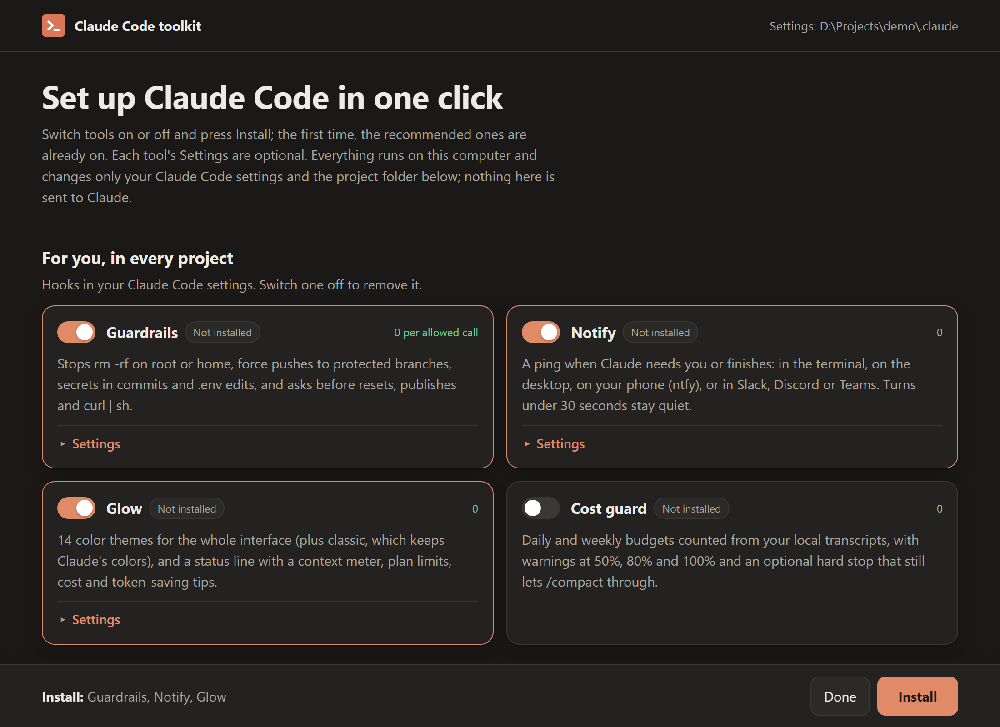

Handover
Stop paying to reload one giant chat. Short sessions that start from a handover file Claude Code loads by itself, a decisions log, and recall of earlier sessions.
npx -y github:nrzz/claude-code-handover initNineteen small, open-source tools. Each is a dependency-free Node command or plugin that adds few or no tokens to your sessions, and all nineteen are tested together, installed from GitHub, on Windows, macOS and Linux.
$ npx -y github:nrzz/claude-code-toolkitOpens a setup page with the recommended tools already switched on: one click on Install sets them up, and each tool's settings are there when you want them. Prefer Claude Code's plugins? /plugin marketplace add nrzz/claude-code-toolkit. Spendcap is in Anthropic's plugin directory: /plugin install spendcap@anthropic-plugin-directory

The green tag is what a tool adds to your sessions. Every README has a table with the details, and a section that says what was verified and how.
Stop paying to reload one giant chat. Short sessions that start from a handover file Claude Code loads by itself, a decisions log, and recall of earlier sessions.
npx -y github:nrzz/claude-code-handover initShare sessions, notes and team context with coworkers through git or a shared folder, synced in the background. Load a teammate's session by topic.
npx -y github:nrzz/claude-code-team-sync init14 themes that recolor the whole interface (and a classic one that keeps Claude's colors), a status line with a context meter and plan limits, and a live HUD with tips that help you spend fewer tokens.
/plugin install glowline@claude-code-toolkitStops rm -rf /, force pushes to protected branches, secrets in commits and .env edits, and asks before resets, publishes and curl | sh.
/plugin install guardrails@claude-code-toolkitA ping when Claude needs you or finishes: terminal, desktop, phone through ntfy, Slack, Discord, Teams or your own command. Short turns stay quiet.
/plugin install nudge@claude-code-toolkitDaily and weekly budgets counted from your local transcripts, warnings at 50%, 80% and 100%, and an optional hard stop that still lets /compact through.
/plugin install spendcap@claude-code-toolkitWhat your memory files cost in every session, what is stale or duplicated, and the fixes that save the most tokens. Runs in CI too.
npx -y github:nrzz/claude-md-doctorA lean CLAUDE.md, permission rules, /test and /check skills and a Haiku test runner for .NET, Node, Python, Go, Flutter or Java, in one command.
npx -y github:nrzz/claude-code-starter-kitsSearch everything you discussed in past sessions, and export one as a self-contained HTML replay or Markdown. --redact replaces secrets first, and the plugin's /replayer:replay always uses it.
npx -y github:nrzz/claude-session-replay listContinue a Cursor or Antigravity chat in Claude Code (claude --resume opens it with the whole chat as history), hand a Claude Code session to them, or turn any chat into Markdown or JSON. Reads Codex CLI, claude.ai and ChatGPT exports too.
npx -y github:nrzz/claude-chat-ferry import cursor:latestDelete, keep and restore your sessions before the 30-day cleanup removes them: a list with the day each one goes, a trash you can restore from, and a keep list that outlives the cleanup. Finds empty and orphaned sessions too.
npx -y github:nrzz/claude-session-tidy listSee why a permission prompt appeared: the rule that allowed, asked about or denied each part of a command, or the one rule that would stop it. Finds dead and hidden rules, and proposes rules from the commands that ran without one.
npx -y github:nrzz/claude-permission-doctor lintRun every hook of your setup with the exact JSON Claude Code sends for its event, and see what each one does: exit code, time, output, whether the output is valid for the event, and whether it blocks, allows or stays silent. Finds the misspelled event, the lowercase matcher and the missing script before anything runs.
npx -y github:nrzz/claude-hook-bench runMove Claude Code's config folder (settings, sessions, the plugin cache, .claude.json) to another drive or into the XDG folders. It writes CLAUDE_CONFIG_DIR into your shell profiles and the Windows user environment, keeps file times, refuses while Claude Code runs, and undo puts everything back.
npx -y github:nrzz/claude-relocate planComments for your settings: a settings.jsonc that builds settings.json. The settings Claude Code merges, with the file each key came from and which one wins, and a lint that finds the comment or trailing comma that makes Claude Code ignore a whole file, keys the schema does not know, wrong types and deprecated keys.
npx -y github:nrzz/claude-settings-doctor lintWhat auto mode and its classifier decided, read from your transcripts: who made each tool decision, the commands the classifier refused, and the refusals that were no verdict at all, the service rather than your settings. Its lint finds an autoMode list that drops the built-in rules because "$defaults" is missing, and why says whether a command goes to the classifier.
npx -y github:nrzz/claude-automode-doctor reportEvery MCP server Claude Code would load for the project, from which file and which definition wins, and whether a .mcp.json server is approved, pending or off. check starts each server the way Claude Code would, lists its tools and sizes them; the lint finds a command not on PATH, a ${VAR} set nowhere and a name in two scopes.
npx -y github:nrzz/claude-mcp-check showWhether Claude Code's Bash sandbox can work on this machine (bubblewrap, socat and user namespaces on Linux, seatbelt on macOS), the merged sandbox settings with their files, and why a command runs inside the sandbox, outside it, or not at all. Its lint finds the settings that never take effect, such as an allowedDomains entry with a scheme.
npx -y github:nrzz/claude-sandbox-doctor checkOn Windows: which shell the Bash tool will get and why, every claude on the machine and which one runs first, and the setup problems behind common Windows issues, such as Git Bash that Claude Code cannot find. fix --git-bash sets CLAUDE_CODE_GIT_BASH_PATH for you, and undo takes it out.
npx -y github:nrzz/claude-windows-doctor checkSo you can add one without wondering what it does to your machine, your settings or your bill.
Node 18 or newer and nothing from npm. There is nothing to audit but the code itself.
A hook speaks to the model only when that is its job, like a recalled line or the reason a command was stopped; the rest talks to you. Skills Claude does not need are user-only. Every README states what each part costs.
A backup before every write, only the keys each tool is there for, invalid JSON left alone, and an uninstall that takes out what it added.
Each says what was verified and how, and what was not. Each runs its tests on Windows, macOS and Linux with Node 20, 22 and 24, and on Linux with Node 18.
One end-to-end run does what a new user would, on a clean machine, and CI repeats it every week so a Claude Code update that breaks a tool shows up.
settings.json lists it, with the JSON Claude Code sends: guardrails denies rm -rf /, notify pings after a long turn, cost guard holds a prompt over a hard budget, two teammates share a session through one git remote, a replay escapes hostile text, session tidy keeps one old session and moves another to its trash and back byte for byte, permission doctor explains a prompt and finds a dead rule without changing a file, relocate moves a config folder and puts it back byte for byte, settings doctor finds the trailing comma that makes Claude Code ignore a whole file and builds settings.json from a commented settings.jsonc, auto mode doctor tells a classifier refusal from a refusal with no verdict, MCP check starts a server the way Claude Code would and sizes its tools, sandbox doctor tells a command its excludedCommands entry takes out of the sandbox from one that stays in it, windows doctor reports the shell Claude Code would give the model.claude plugin install, their own hooks run from the installed copies, their token estimate checked, the request Claude Code sends the model checked for their user-only skills, and the HUD's engine tests run inside Claude Code.settings.json checked to be exactly what the user had.The releases of 4 October come from an audit that checked every README against the code. Each tool's changelog lists every fix.
Short agent names: claude, gemini and copilot are accepted wherever an agent is named, with the long ids kept in every output and configuration line; from the first outside pull request on this tool.
explain --list <part> prints the finding ids that contain a part, with their titles (explain --list git-bash prints the four); from an outside pull request, the fourth on this tool.
list --since <days> keeps the sessions with activity in the last N days, by the newest timestamp in each transcript; from an outside pull request, the fourth on this tool, reviewed by another contributor.
explain tells an ambiguous part of a finding id from an unknown one: every id that contains the part, in page order (explain git-bash names the four); from an outside pull request, the third on this tool.
list --title finds sessions by a part of their title, and the repository checks that had been red since 16 October are repaired; from an outside pull request, the second on this tool.
explain takes a part of a finding id when exactly one id contains it (explain long prints long-paths); from an outside pull request, the second on this tool.
New, for Windows users of every agent: which shell Claude Code, Codex CLI, Gemini CLI, Copilot CLI and Cursor each give the model and why, every binary and launcher, hooks on Windows, proved against the real binaries.
New, for Codex CLI: every configuration layer Codex reads, what it ignores in silence, why a command needs approval, and what AGENTS.md costs on every turn.
New, and not only for Claude Code: write a hook once and run it in Claude Code, Codex CLI, Gemini CLI, GitHub Copilot CLI and Cursor, with a bench that puts it to the JSON each real agent sends.
explain --list prints every finding id with its title, from an outside pull request; the real-binary checks pass on Claude Code 2.1.302, which ends a turn in silence when a skill's command is not allowed.
lint warns about an allowedDomains entry for a loopback or link-local address, which the sandbox's proxy refuses anyway; from an outside pull request.
The Markdown report names a date window the way the text report does (since 2026-10-12, not last N days); from an outside pull request.
Nineteen tools: the setup page, the marketplace and the end-to-end test now include sandbox doctor and windows doctor.
New: which shell the Bash tool gets on Windows and why, every claude on the machine, and the setup problems behind common Windows issues.
New: whether the Bash sandbox can work on your machine, and why a command ran inside it, outside it, or not at all.
Seventeen tools: the setup page, the marketplace and the end-to-end test now include auto mode doctor and MCP check.
New: every MCP server Claude Code would load, from which file, whether it starts, and what its tools cost.
New: what auto mode and its classifier decided, from your transcripts, and a lint of the autoMode settings. 1.1.0 adds --since with a date, from the first outside pull request.
Fifteen tools: the setup page, the marketplace and the end-to-end test now include relocate and settings doctor.
New: a commented settings.jsonc that builds settings.json, the merged settings with the file each key came from, and a lint that finds what Claude Code ignores in silence.
New: move Claude Code's config folder to another drive or the XDG folders, with CLAUDE_CONFIG_DIR set for every shell and an undo that puts it back.
Thirteen tools: the setup page, the marketplace and the end-to-end test now include hook bench.
New: run every hook with the JSON Claude Code sends, and see whether it blocks, allows, adds context or fails, with the output checked against the rules Claude Code applies.
Twelve tools: the setup page, the marketplace and the end-to-end test now include permission doctor, and the token check also looks at the request Claude Code sends the model.
New: see why a permission prompt appeared, find dead and shadowed rules, and get rules proposed from the commands that ran without one.
Eleven tools: the setup page, the marketplace and the end-to-end test now include session tidy.
New: list your sessions with the day Claude Code's 30-day cleanup removes each, delete with a restore, and keep the ones you want past the cleanup.
The setup page's server keeps its connections open while an installer runs, so a slow machine no longer sees a reset request; a Star link and a sitemap for the site.
Privacy fixes: the session title and any tool input field named like a secret are now redacted before a session is shared, and an invalid settings file is left as it is.
New: continue a Cursor or Antigravity chat in Claude Code, hand a Claude Code session to them, or turn any chat into Markdown or JSON.
Ten tools: the setup page, the marketplace and the end-to-end test now include chat ferry.
--redact also hides fields named like secrets, control characters are removed from names, titles and snippets, and the plugin is now called replayer.
The guard's limit follows your context window setting, and /recall and the audit scripts follow CLAUDE_CONFIG_DIR.
The token doctor no longer counts user-only skills, and the plugins are now called glowline and glowbar.
The plugin is now called nudge, and the README says exactly what a notification holds and where it goes.
The plugin is now called spendcap, and the README says what the index keeps.
--dry-run publishes now pass for poetry, uv, flit, hatch, vsce and ovsx too, and the two skills pre-approve only guardrails' own command instead of any node command.
A short rule with real content, such as "Be careful with database migrations.", is no longer flagged as filler, and the skill pre-approves only md-doctor's own command.
The --list columns fit their longest entry.
The marketplace lists the renamed plugins, and the end-to-end test with --local runs every check.